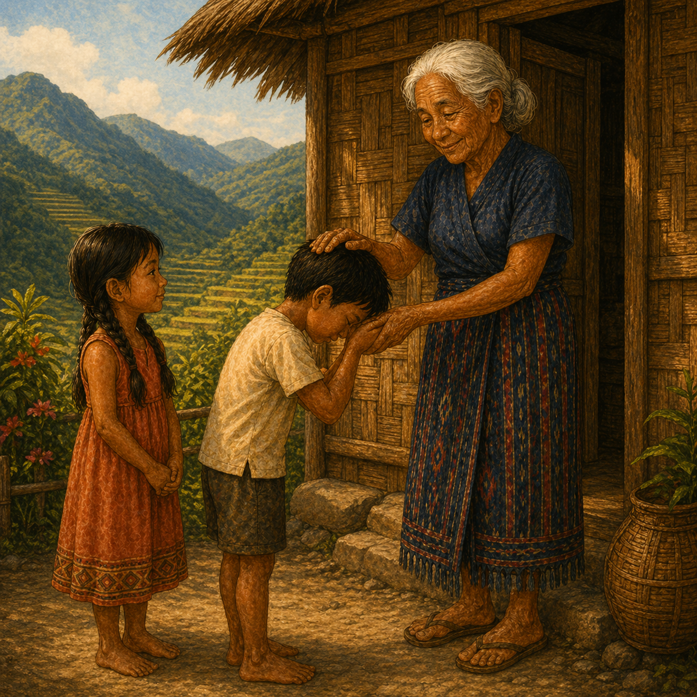

Bambantay Tuturod
The Mountains Stand With Us
High in the mountains of Northern Luzon, the bambantay — the steadfast mountain — watches over the people, the land, and their stories. In this lyrical picture book, two young friends invite you to join them as they ride horses through sunlit hills, drink fresh milk, and rest in the peaceful shade of the trees.
Adapted from the beloved Ilocano folk song Bambantay Tuturod, this book includes original Ilocano lyrics alongside a faithful, singable English version, vibrant culturally authentic illustrations, a glossary of Ilocano words, and a cultural note exploring the song's origins and place in Philippine heritage.
Whether you're reconnecting with your roots or discovering Ilocano culture for the first time, Bambantay Tuturod is more than a story — it's a song you can sing, a language you can learn, and a piece of home you can hold in your hands.
A Look Inside
